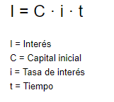

Es el beneficio o costo generado sobre un capital inicial durante un tiempo determinado. En este modelo, los intereses no se suman al capital principal, por lo que las ganancias o cobros siempre se calculan sobre la cantidad original.
